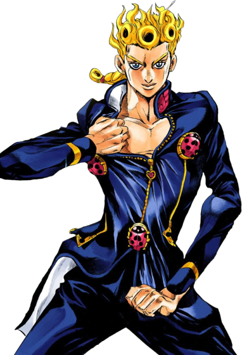

Giorno Giovanna
Giorno Giovanna has a dream. A dream to become a gang star and rid Italy of drugs
Quotes
I, Giorno Giovanna, have a dream!
I plan on defeating your boss and taking over this city. In order to get rid of gangsters who sold drugs to children, I'm going to have become a gangster myself.
That's only if we steal one car... But if we steal a hundred, it won't be easy for them to find out which one we are in
Drugs...
Interesting Facts
- Giorno is the son of DIO, who's head was on Jonothan Joastar's body at the time of conception
- His stand is OP, and could have made part 6 go much better
- Giorno Giovanna tastes of a liar